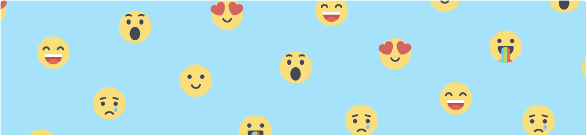

31-May 2019 / Mental Health Awareness
Is Tracking your health good for you
Is Tracking your health good for you
- As our original published study revealed, Buddie “feels more like a friend checking in than an app”. Answering a friend is psychologically easier than feeling like you’re doing homework, or being harassed by a needy app notification.
- And yet, Buddie is not human. This is also what makes the experience different. Because it means that when the question is sent, the usual guff of social relationships like feeling self-conscious (“are they reaching out to me because they think I’ve been a negligent friend?”), impression management burden (“how do I answer this so I sound fun and smart?”) etc. is eliminated. Freeing us up to answer that question honestly - “How am I, really?”
- Over time, Buddie remembers what you’re sharing. Buddie can use that information to encourage reflection, with the hope of providing insights. We define an insight as a piece of information that leads to behaviour change.
- Buddie isn’t just for people with “real” problems. Rather, a guiding design principal for us is that everyone can benefit from basic emotional awareness. My husband is the most positive, well-adjusted person I’ve ever met, and yet after just a few days of checking in with Buddie he was shocked to discover a clear association between having even one mid-week drink with a dip in mood the next day.
- One of the first steps towards learning about what’s going on inside of our brains is to begin by cultivating awareness. Once we’re able to do this over time, we should be able to more easily connect with ourselves and what we’re experiencing, feel more grounded and mindful. If we can identify patterns, we can learn about why we’re experiencing different moods, which can lead us to have more control over how we feel each and every day. Time well spent I’d say.
 Adekwu David, MD/CEO
Adekwu David, MD/CEO
Copyright © Hymenaios 2019